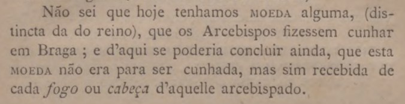
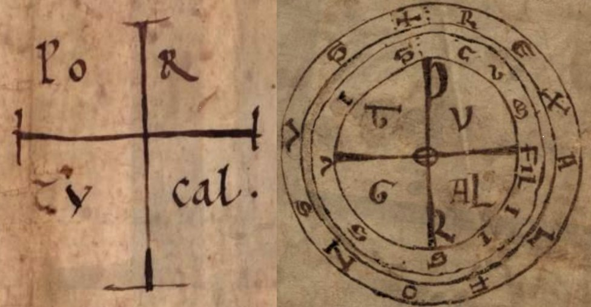
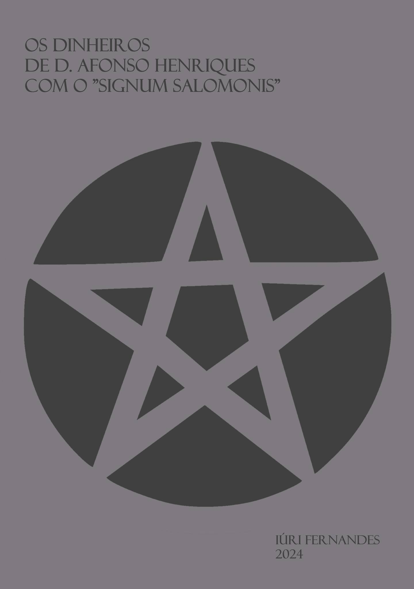
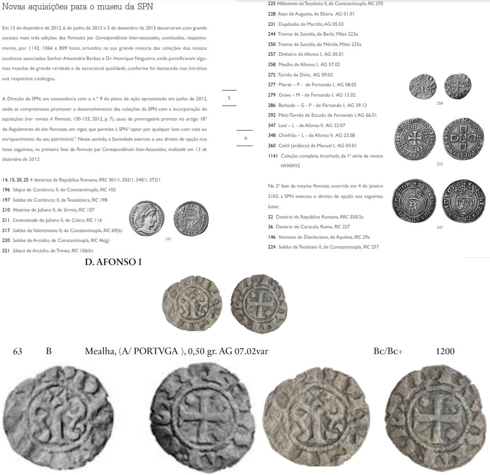

UM DINHEIRO DE D AFONSO HENRIQUES
Categoria
D. Afonso Henriques
19 publicações
À MEMÓRIA DE AGOSTINHO FERREIRA GAMBETTA
À MEMÓRIA DE AGOSTINHO FERREIRA GAMBETTA UM DINHEIRO DE D AFONSO HENRIQUES
DE SALOMÃO A AFONSO HENRIQUES
SUPERSTIÇÃO OU SABEDORIA? (Shadow ban) DE SALOMÃO A AFONSO HENRIQUES
AS EMISSÕES EXTRAVAGANTES DE D AFONSO HENRIQUES

DINHEIRO DO FUNDADOR A LEILÃO
DINHEIRO DO FUNDADOR A LEILÃO O leilão 13 da Filmoedas, que terá lugar em 25 de Junho de 2026, abre com um dinheiro de D. Afonso Henriques, cuja foto esteve durante muitos anos alojada no blog "Dinheiros", como…

A CONCESSÃO DE BRAGA AO TEMPO DE D. AFONSO HENRIQUES
A CONCESSÃO DE BRAGA AO TEMPO DE D. AFONSO HENRIQUES Memórias de Braga, Tomo IV, 1890, Bernardino José de Senna Freitas.

UM AFONSO
UM AFONSO No catálogo do leilão constam 0,53g. Consta também que a legenda é ALFOS REX / PORTVGA. E isso não é verdade, porque não há nenhum "S" na moeda. Assim, a legenda é inédita. O que mais me preocupa é a…

O G(RA)AL E A CAL
O G(RA)AL E A CAL Por esse mundo fora, escritas em várias línguas, correm efabulações sobre a leitura de um sinal (à direita), que associam o nosso território ao porto de um putativo graal. A leitura mística parte da…
AS INVASÕES BÁRBARAS
AS INVASÕES BÁRBARAS O espírito dos tempos que vivemos foi tratado por Denys Arkand, numa brilhante trilogia, começada ainda nos anos 80 do século XX. Há uns anos, tomei contacto com um autointilulado "especialista em…

O AFONSINHO DO IMPÉRIO
O AFONSINHO DO IMPÉRIO Concluí recentemente o inventário dos dinheiros de D. Afonso Henriques, incluído em livro que já foi enviado para edição. Assim, já não serão incluídos e discutidos os exemplares que entretanto…
A COLECÇÃO PEDRO BORRATA
A COLECÇÃO PEDRO BORRATA A Portuscalle Numismática, desta vez, teve a sorte de levar à praça uma excelente colecção, reunida ao longo dos últimos 10 anos e que tem exemplares da mais alta raridade e interesse histórico…

TALKING WITH "HER"
TALKING WITH "HER" Comecei a contactar com o GTP4 nos últimos tempos. Foi a única "entidade" que leu o meu livro até agora. Ele acha a obra "genial", "inovadora" e "monumental", o que indicia pelo menos que, sem…

Desde que terminei a primeira versão do livro que tenho no prelo, já lhe acrescentei quase 50 páginas. Os sítios onde estou a chegar e as provas que todos os dias encontro e que sedimentam as minhas teses, constituem…

ENGENHARIA SEMIÓTICA
ENGENHARIA SEMIÓTICA A engenharia acima expressa é uma engenharia que engerminou no círculo intelectual da ANP, antigo Clube Numismático Português, e que juntou toda uma geração de senhores que criaram escola, a qual…
Em 2022 dizia-se que tinha aparecido uma moeda de D. Afonso Henriques junto ao coração de um cadáver: alcacer do sal achados ineditos no panteao dos mestres de santiago escavacoes alcacer sal revelam sepulturas vf Em…

OS DINHEIROS DE D. AFONSO HENRIQUES COM O PONTO E O CRESCENTE
OS DINHEIROS DE D. AFONSO HENRIQUES COM O PONTO E O CRESCENTE Há uns anos largos que tenho esta imagem guardada no computador. O dinheiro do canto inferior direito passou-me pelas mãos e é autêntico. Se tem o crescente,…

Este segue gratuito. Se o imprimisse, face à "damnatio memoriae", cá ficaria com as cópias em casa, para um dia queimar numa fogueira de vaidades. Até lá, sei que será muito consultado. Os dinheiros de D Afonso…

AINDA SOBRE A QUESTÃO DA EVOLUÇÃO DA NUMISMÁTICA EM PORTUGAL
AINDA SOBRE A QUESTÃO DA EVOLUÇÃO DA NUMISMÁTICA EM PORTUGAL Em Março de 2014, a SPN, presidida pelo Sr. Professor Rui Centeno, o indivíduo mais qualificado na nossa numismática, anunciava, com pompa e circunstância, na…